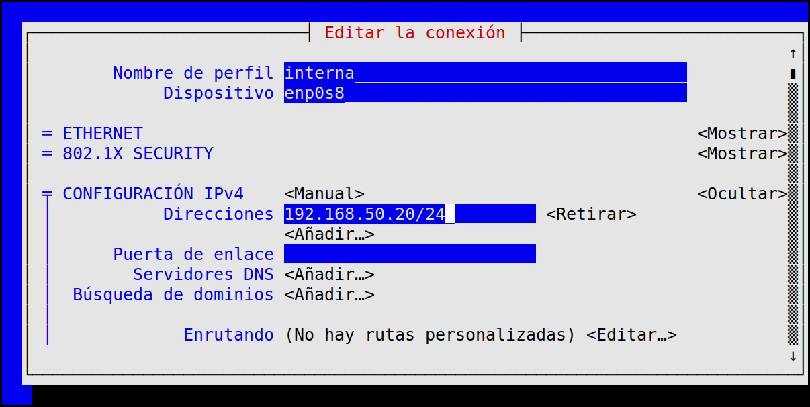
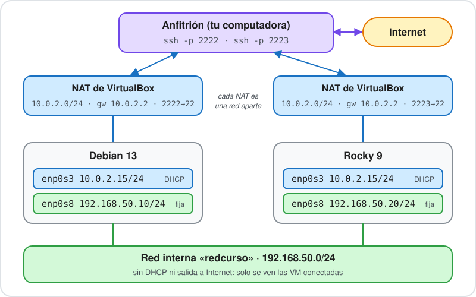
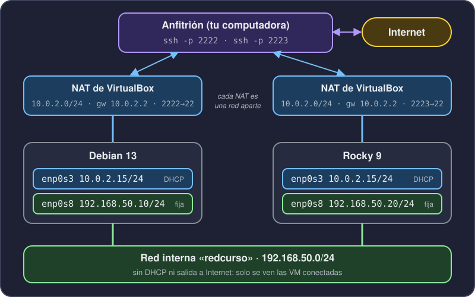

Clase 14: journalctl, donde quedan los mensajes de la red.
Conceptos de red
Interfaz y dirección IP
Una interfaz es la puerta del equipo hacia una red: una placa de red, real o virtual.
Una dirección IP es el número que identifica al equipo en esa red, como el número de una casa en una calle.
Una interfaz puede tener varias direcciones o ninguna. enp0s8, la segunda placa de la VM (la de la red del laboratorio), arranca sin dirección.
$ ip -br -4 a
lo UNKNOWN 127.0.0.1/8
enp0s3 UP 10.0.2.15/24
ip -br -4 a lista las interfaces con sus direcciones. -br es el formato breve y -4 muestra solo las direcciones IPv4.
lo es la interfaz interna del equipo; enp0s3, la placa de la VM.
Nombres de las interfaces
Los nombres predecibles los arma systemd/udev a partir del hardware, y los usan Debian, Ubuntu y Rocky. Empiezan con en (Ethernet) o wl (Wi-Fi).
Nombre
Qué indica
Dónde se ve
lo
el propio equipo
todos los sistemas
eth0
clásico, numerado en orden
Docker, WSL, Raspberry Pi OS
eno1
placa integrada (firmware)
placa madre del equipo
ens33
ranura PCI (firmware)
típico de VMware
enp0s3
bus 0, ranura 3 del PCI
típico de VirtualBox: nuestras VM
wlo1 / wlp2s0
Wi-Fi, nombre predecible
equipos con Wi-Fi
wlan0
Wi-Fi, nombre clásico
Raspberry Pi OS, net.ifnames=0
La red y la máscara
Una red es el conjunto de equipos que se hablan directamente, sin pasar por un router. Las direcciones de una misma red comparten el comienzo.
La máscara dice cuánto del comienzo es la red. En 10.0.2.15/24, el /24 significa que los primeros 24 bits (10.0.2) identifican la red y el resto (15) identifica al equipo.
Dirección
Red
Equipos posibles
10.0.2.15/24
10.0.2.0
254 (del .1 al .254)
192.168.50.10/24
192.168.50.0
254
Dos equipos con /24 y el mismo comienzo (192.168.50) se ven directo. Con 192.168.51, ya son redes distintas.
La 192.168.50.0 es la red interna del laboratorio, la que armamos al final de la clase.
Puerta de enlace y DNS
Para hablar con un equipo de otra red, el paquete se entrega a la puerta de enlace (gateway): el router que conecta nuestra red con las demás. En la VM es 10.0.2.2.
El DNS es el servicio que traduce nombres (debian.org) a direcciones. En la VM es 10.0.2.3. Lo vemos con más detalle en la clase 19; hoy solo cómo lo usa el cliente.
Con ping comprobamos que la puerta de enlace responda:
$ ping -c 3 10.0.2.2
64 bytes from 10.0.2.2: icmp_seq=1 ttl=64 time=0.447 ms
64 bytes from 10.0.2.2: icmp_seq=2 ttl=64 time=0.643 ms
64 bytes from 10.0.2.2: icmp_seq=3 ttl=64 time=0.778 ms
Puertos
La IP identifica al equipo; el puerto, al servicio dentro del equipo, como el departamento en un edificio.
Van del 0 al 65535. Del 1 al 1023 son los de servicios conocidos: en Linux solo root puede abrirlos.
Cada número existe en TCP y en UDP. TCP abre una conexión y controla que todo llegue; UDP manda mensajes sueltos.
Puerto
Protocolo
Servicio
22
TCP
SSH
53
UDP y TCP
DNS
67 y 68
UDP
DHCP
80
TCP
web (HTTP)
443
TCP
web cifrada (HTTPS)
Un servicio escucha en un puerto. Por eso anda el reenvío de la clase 4: el 2222 de la laptop va al 22 de la VM.
DHCP o dirección fija
Dos maneras de que una interfaz tenga dirección:
DHCP: un servicio de la red le reparte una. Es lo que hace la NAT de VirtualBox, y por eso enp0s3 tiene 10.0.2.15 sin que hayamos escrito nada.
Fija: la escribimos en la configuración.
Un servidor suele llevar dirección fija: otros equipos lo buscan siempre en el mismo lugar. Una dirección repartida por DHCP puede cambiar.
En una red interna de VirtualBox no hay servicio DHCP. Ahí la dirección fija hace falta.
Direcciones privadas y localhost
Hay rangos reservados para redes internas, que no se usan en Internet:
Rango
Ejemplo
10.0.0.0/8
10.0.2.15
172.16.0.0/12
172.16.10.12
192.168.0.0/16
192.168.50.10
Muchas casas y oficinas usan las mismas direcciones privadas porque cada red es aparte. Para salir a Internet, el router las traduce a una dirección pública (eso es NAT).
127.0.0.1 es el propio equipo (localhost). Un servicio que escucha solo ahí no se alcanza desde afuera. Lo usamos al final de la clase.
La tabla de ruteo
El equipo decide por qué interfaz sale cada paquete mirando su tabla de ruteo, que se lee con ip route.
$ ip route
default via 10.0.2.2 dev enp0s3 proto dhcp src 10.0.2.15 metric 1002
10.0.2.0/24 dev enp0s3 proto dhcp scope link src 10.0.2.15 metric 1002
10.0.2.0/24 dev enp0s3: para esa red, salir directo por enp0s3.
default via 10.0.2.2: para cualquier otro destino, entregarlo a la puerta de enlace. Es la ruta por defecto.
$ ip a
2: enp0s3: <BROADCAST,MULTICAST,UP,LOWER_UP> mtu 1500 qdisc fq_codel state UP group default qlen 1000
link/ether 08:00:27:c6:71:ba brd ff:ff:ff:ff:ff:ff
inet 10.0.2.15/24 brd 10.0.2.255 scope global dynamic noprefixroute enp0s3
valid_lft 86370sec preferred_lft 75570sec
3: enp0s8: <BROADCAST,MULTICAST> mtu 1500 qdisc noop state DOWN group default qlen 1000
link/ether 08:00:27:87:01:11 brd ff:ff:ff:ff:ff:ff
state UP o DOWN: la interfaz está encendida o apagada.
link/ether: la dirección física (MAC) de la placa.
inet: la dirección IPv4. dynamic dice que vino por DHCP.
enp0s8 es la placa nueva (la segunda, en la red interna del laboratorio): sin inet y DOWN.
Las rutas y la ruta hacia un destino
$ ip route get 8.8.8.8
8.8.8.8 via 10.0.2.2 dev enp0s3 src 10.0.2.15 uid 1000
cache
ip route get pregunta cómo saldría un paquete hacia un destino: por qué interfaz y por qué puerta de enlace. Es la mejor pregunta cuando algo no llega.
Lo vamos a usar en el diagnóstico.
Cambios temporales
$ sudo ip addr add 192.168.50.10/24 dev enp0s8
$ sudo ip link set enp0s8 up
$ ip -br -4 a
lo UNKNOWN 127.0.0.1/8
enp0s3 UP 10.0.2.15/24
enp0s8 UP 192.168.50.10/24
ip addr add pone la dirección y ip link set up enciende la interfaz. La ruta a 192.168.50.0/24 aparece sola.
No quedan guardados en ningún archivo: al reiniciar se pierden.
sudo ip addr del 192.168.50.10/24 dev enp0s8 la quita, y enp0s8 deja de aparecer en ip -br -4 a.
Sirve para probar. Para que quede, hay que escribir la configuración.
Debian: archivo de configuración
En Debian la red la arma ifupdown y se configura en texto plano, en /etc/network/interfaces.
# /etc/network/interfaces (el que viene en la VM)
source /etc/network/interfaces.d/*
allow-hotplug enp0s3
iface enp0s3 inet dhcp
# /etc/network/interfaces.d/enp0s8 (dirección fija, en un archivo propio)
auto enp0s8
iface enp0s8 inet static
address 192.168.50.10/24
auto: se levanta al arrancar.
inet static y address: dirección fija, con la máscara.
Sin gateway: la salida sigue siendo por enp0s3.
Levantar y bajar interfaces
$ sudo ifup enp0s8
$ ip -br -4 a
enp0s8 DOWN 192.168.50.10/24
$ ip -br -4 a # unos segundos después
enp0s8 UP 192.168.50.10/24
ifup levanta la interfaz con lo que dice el archivo. No imprime nada si anda bien.
Justo después puede verse DOWN: el enlace tarda 2 o 3 segundos en subir. Esperar antes de dar la configuración por fallida.
Para cambiarla: primero ifdown, después editar, y por último ifup. Si se edita antes, ifdown da Error: ipv4: Address not found.
Un riesgo: reiniciar la red
$ sudo systemctl restart networking
$ ip -br a
enp0s3 UP fd17:625c:f037:2:d6c7:d927:be43:d878/64 fe80::364:3345:a464:8e46/64
Con systemctl restart networking, durante unos segundos enp0s3 queda sin IPv4 y sin ruta por defecto, hasta que el DHCP renueva. En un servidor remoto, la sesión SSH se puede cortar.
Para una dirección fija nueva alcanza con ifup de esa interfaz. Reiniciar networking afecta a todas.
Después de reiniciar el equipo, la dirección fija sigue ahí: el archivo manda.
Ubuntu: netplan
Ubuntu Server no usa /etc/network/interfaces. Usa netplan: un archivo YAML en /etc/netplan/ que describe la red. De ahí netplan genera la configuración para el servicio que la aplica (systemd-networkd o NetworkManager).
netplan try aplica la configuración y la deshace sola si no se confirma en 120 segundos. Útil en un servidor remoto: si se corta la conexión, vuelve atrás.
El YAML se escribe con espacios. Con un tabulador, netplan saltea el archivo:
Invalid YAML: tabs are not allowed for indent
El archivo va con permisos 600; si otros lo pueden leer, netplan avisa.
Rocky: NetworkManager
En Rocky la red la maneja NetworkManager. Cada configuración es un perfil, un archivo en /etc/NetworkManager/system-connections/, y nmcli es la herramienta para crearlos y verlos.
$ nmcli device
DEVICE TYPE STATE CONNECTION
enp0s3 ethernet conectado enp0s3
enp0s8 ethernet conectado interna
lo loopback connected (externally) lo
nmcli device: las interfaces y qué perfil usa cada una.
nmcli con show: los perfiles.
Con una placa nueva, NetworkManager arma solo un perfil «Conexión cableada 1» con DHCP. En una red interna no hay DHCP: queda en «conectando» sin dirección hasta que creamos uno propio.
El perfil se puede crear con nmcli o con nmtui, que es el mismo NetworkManager con menús.
Rocky: configuración con menús
nmtui arma el perfil con menús en la terminal, sin tener que recordar las opciones de nmcli. Se usa con sudo. En el laboratorio, Rocky se configura con nmtui.

Tab y flechas para moverse, Enter para elegir, Espacio para marcar.
Al aceptar, NetworkManager guarda el perfil en /etc/NetworkManager/system-connections/ y lo activa.
ping manda un pedido a otro equipo y espera la respuesta: si vuelve, hay camino. -c 3 manda tres pedidos y termina.
$ ping -c 3 8.8.8.8
64 bytes from 8.8.8.8: icmp_seq=1 ttl=118 time=11.7 ms
...
3 packets transmitted, 3 received, 0% packet loss, time 2003ms
$ ping -c 3 debian.org
64 bytes from 151.101.130.132: icmp_seq=1 ttl=59 time=20.7 ms
...
3 packets transmitted, 3 received, 0% packet loss, time 2004ms
Con la IP y con el nombre responde: la red anda. Cuando falla, el mensaje de ping a veces engaña. El que no engaña es ip route get: dice por dónde sale el paquete.
Interfaz caída o red equivocada
Desde Debian, ping 192.168.50.20 no llega (es la VM Rocky, en la red interna). Dos causas distintas dan el mismo síntoma:
$ ping -c 3 -W 2 192.168.50.20
From 172.16.10.12 icmp_seq=1 Destination Port Unreachable
3 packets transmitted, 0 received, +1 errors, 100% packet loss
-c 3 manda tres pedidos y -W 2 espera hasta 2 segundos cada respuesta.
Esa dirección (172.16.10.12) no es de las VM: es de un router de afuera. El mensaje no dice qué falló. La pista está en la ruta, con ip route get:
$ ip route get 192.168.50.20
192.168.50.20 via 10.0.2.2 dev enp0s3 src 10.0.2.15 uid 1000
Sale por la NAT (enp0s3) y no por la red interna (enp0s8). Falta la ruta a 192.168.50.0/24.
El ping por IP anda y el del nombre no: la red está bien y falla la resolución.
$ getent hosts rocky
$ echo $?
2
$ ping -c 3 rocky
ping: rocky: Fallo temporal en la resolución del nombre
$ ping -c 2 192.168.50.20
64 bytes from 192.168.50.20: icmp_seq=1 ttl=64 time=1.48 ms
Un nombre que falta en /etc/hosts falla enseguida.
Un nameserver equivocado: ping debian.org falla en unos 5 segundos y ping 8.8.8.8 anda.
Un nameserver que no contesta: getent hosts tarda unos 12 segundos en rendirse. Si un comando se queda colgado antes de fallar, sospechar del DNS.
Se revisa /etc/hosts y /etc/resolv.conf.
Los saltos hasta el destino
traceroute muestra los saltos que da un paquete hasta el destino: cada router por el que pasa.
$ traceroute -n 8.8.8.8
traceroute to 8.8.8.8 (8.8.8.8), 30 hops max, 60 byte packets
1 10.0.2.2 0.390 ms 0.290 ms 0.365 ms
2 172.16.10.1 4.239 ms 4.017 ms 3.991 ms
3 192.168.100.1 3.868 ms 3.778 ms 3.696 ms
...
9 8.8.8.8 8.794 ms 9.199 ms 7.866 ms
El primer salto es la NAT de VirtualBox; los siguientes son de la red del anfitrión. Un * * * es un salto que no contesta.
Misma aplicación y mismo puerto: solo cambia la dirección en que escucha.
Escuchar solo donde hace falta
Si un servicio es solo para el propio equipo, que escuche en 127.0.0.1.
Si es para una red interna, en la dirección de esa interfaz.
Un servicio que no se usa se apaga y se deshabilita (clase 10).
sshd escucha en todas las interfaces (0.0.0.0:22). En la clase 18 vemos cómo ajustarlo.
Consultas
La red del laboratorio
Los modos de red de VirtualBox
La clase 2 presentó la tabla de modos: NAT, red NAT, puente, red interna y host-only.
También planteó como esquema fijo una placa NAT más una host-only. Desde la clase 4 trabajamos con una sola placa NAT y el reenvío de puertos, que alcanzó para llegar por SSH.
Hoy hace falta que las dos VM se vean entre sí. La NAT no lo permite. Para eso sumamos una segunda placa en modo red interna.
Diseño de red de labs


La primera placa sigue en NAT: Internet y SSH, como siempre.
La segunda placa va a una red interna: solo se ven las VM que estén en ella.
Crear la red y agregar la placa se hace en VirtualBox, en el laboratorio.
Dos VM con la misma dirección
Las dos VM tienen 10.0.2.15 en la NAT y no chocan: cada NAT de VirtualBox es una red aparte, que solo conoce su VM.
Por eso tampoco se ven entre sí por ahí.
La red interna es una red común para las dos, y ahí cada una necesita una dirección propia. No hay DHCP, así que van fijas: 192.168.50.10 para Debian y 192.168.50.20 para Rocky.
Consultas
Resumen
Una interfaz tiene dirección, máscara y, hacia afuera, una puerta de enlace.
ip a, ip route e ip route get leen la red; ip addr add es temporal.